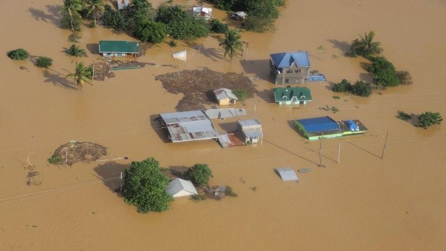

Emergency Response Plan
Situational Analysis for Typhoons in Brgy. Pembo, Makati City
HOME
MITIGATION
PREPARATIONS
RESPONSE
RECOVERY
SUMMARY
MITIGATION
Mitigation is the action of reducing the severity, seriousness, or painfulness of something
For Typhoons, the Philippine Atmospheric, Geophysical and Astronomical Services Administration (PAGASA) is the one studying and monitoring the upcoming weather and typhoons especially here in the Philippines. Using mitigation, if they are able to see the
activities on the Pacific Ocean they will inform the Local Government with the assistance of the groups that help to save people from typhoons. Just like a solution for the Earthquake , after informing them Local Government will be able to do their duty. Additional solution, as we know if there are typhoons there will be floods. The solution will be cleaning the area and minimizing plastics because it can clog drainage which results from flood.
Let assume the situation when there is no typhoon
Local Government will be implementing no plastic policy because it can result in clogging the drainage and causing floods when there will be typhoons.
They will inform people and explain the effects of it when there will be typhoon
People will clean the areas and will not use plastics and instead use paper
Also the Local government will inform and explain to the people to evacuate if they see there will be an upcoming typhoon because this is to prevent casualties depending on how strong the typhoon is .
Let assume the situation when there is an upcoming typhoon:
PAGASA will inform the Local Government about the upcoming typhoon
Local Government will task people to evacuate to prevent casualties
People are informed before why they will evacuate to the evacuation centers

Existing Plans and Policies
Coordinate with the proper officials on possible immediate evacuation measures especially if the structure is located in a low -lying area.
Participate actively in the community’s, school’s or in the workplace’s disaster response – drill or simulation
Informing the people where to go in case floods arises in the area due to typhoons